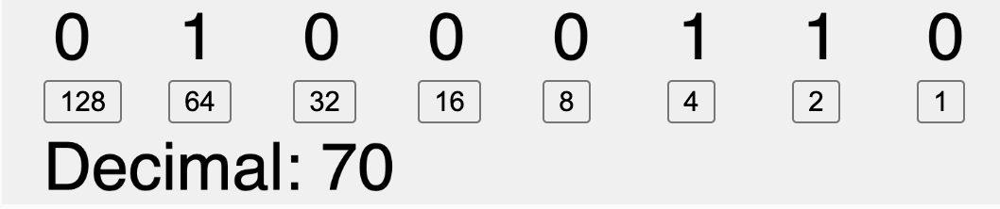
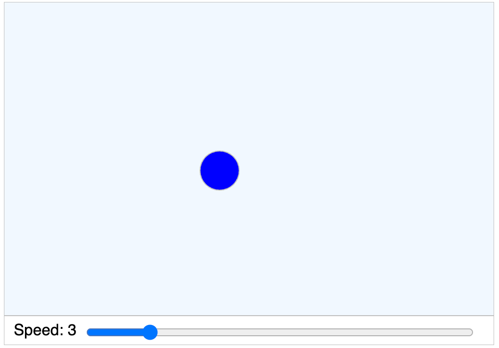
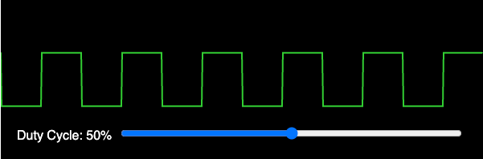
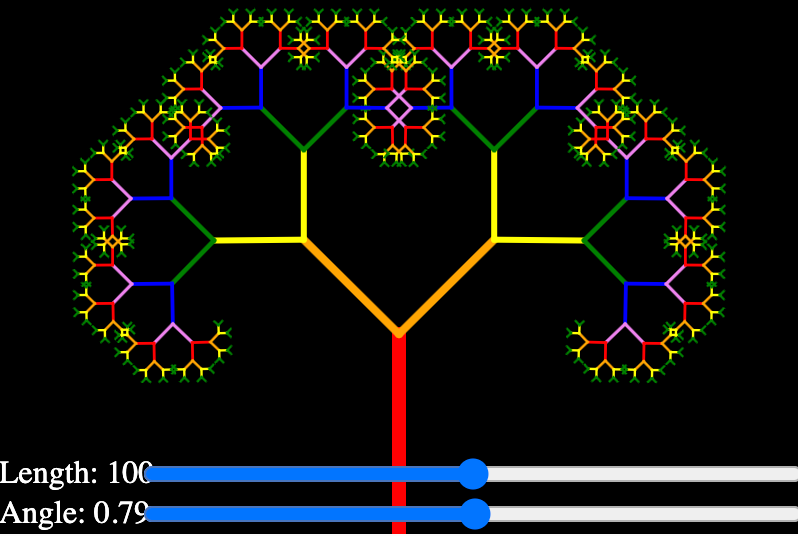

Examples of MicroSims
This section of the MicroSims website contains examples of MicroSims that cover many different subjects in education including geometry, electronics, biology, physics, linear algebra, statistics, systems thinking, cellular automata, fractals and computer science.
We encourage you to submit your own MicroSims and we have a set of guidelines to help.
-
 Interactive simulation of the classic 555 timer integrated circuit.
Interactive simulation of the classic 555 timer integrated circuit. -
 Visualization of the A* pathfinding algorithm on a grid.
Visualization of the A* pathfinding algorithm on a grid. -
Interactive alternating current circuit simulation.
-
 Timeline of AI benchmark achievements and milestones.
Timeline of AI benchmark achievements and milestones. -
Interactive simulation of an arithmetic logic unit.
-
Explore analog circuit fundamentals.
-
 Interactive analog clock face with moving hands.
Interactive analog clock face with moving hands. -
 Animated visualization of electrical current flow in a wire.
Animated visualization of electrical current flow in a wire. -
 Customizable background grid for MicroSim layouts.
Customizable background grid for MicroSim layouts. -
Bouncing Ball in a Rotating Hexagon
 Physics simulation of a ball bouncing inside a rotating hexagon.
Physics simulation of a ball bouncing inside a rotating hexagon. -
Stock and flow simulation demonstrating bathtub dynamics.
-
 Visualization of battery discharge over time.
Visualization of battery discharge over time. -
 Calculate battery life based on capacity and current draw.
Calculate battery life based on capacity and current draw. -
 Visualization of breadth-first search algorithm.
Visualization of breadth-first search algorithm. -
 Side-by-side comparison of breadth-first and depth-first search.
Side-by-side comparison of breadth-first and depth-first search. -
 Interactive binary number converter and visualizer.
-
 Workflow diagram for intelligent textbook generation.
Workflow diagram for intelligent textbook generation. -
 Classic bouncing ball physics simulation.
-
 Interactive breadboard for circuit prototyping.
Interactive breadboard for circuit prototyping. -
 Simulation of random particle movement.
Simulation of random particle movement. -
 Visualization of molecular motion and kinetic theory.
Visualization of molecular motion and kinetic theory. -
Interactive circle geometry exploration.
-
 Simple battery and switch circuit simulation.
Simple battery and switch circuit simulation. -
 Robot navigation with obstacle avoidance.
Robot navigation with obstacle avoidance. -
 Explore named CSS colors interactively.
Explore named CSS colors interactively. -
 Interactive color wheel with harmony rules.
Interactive color wheel with harmony rules. -
 Color wheel featuring CSS named colors.
Color wheel featuring CSS named colors. -
 Classic cellular automaton simulation.
Classic cellular automaton simulation. -
 Interactive visualization of the CSS box model.
Interactive visualization of the CSS box model. -
 Interactive Bezier curve manipulation.
Interactive Bezier curve manipulation. -
 Visual data element mapping tool.
Visual data element mapping tool. -
 Visualization of FFT butterfly computation pattern.
Visualization of FFT butterfly computation pattern. -
Microphone Frequency Visualization with FFT
 Real-time audio frequency analysis using FFT.
Real-time audio frequency analysis using FFT. -
 Enhanced microphone frequency visualization.
Enhanced microphone frequency visualization. -
 Clock display using Fibonacci sequence encoding.
Clock display using Fibonacci sequence encoding. -
 Interactive flashcard study application.
Interactive flashcard study application. -
 Interactive CSS flexbox layout explorer.
Interactive CSS flexbox layout explorer. -
Create flower patterns with customizable petals.
-
 Interactive force-directed graph visualization.
Interactive force-directed graph visualization. -
 Fourier series and transform visualization.
Fourier series and transform visualization. -
 Recursive fractal tree generator.
Recursive fractal tree generator. -
Simulation of the Galton board demonstrating normal distribution.
-
 Visualization of MicroSims educational reach.
Visualization of MicroSims educational reach. -
 Interactive gold star shape generator.
Interactive gold star shape generator. -
 Interactive concept dependency graph explorer.
Interactive concept dependency graph explorer. -
 Motor control H-bridge circuit simulation.
Motor control H-bridge circuit simulation. -
 Interactive Koch snowflake fractal generator.
Interactive Koch snowflake fractal generator. -
 Random walk simulation with a ladybug.
Random walk simulation with a ladybug. -
Knight Rider-style LED scanner animation.
-
 Prompt engineering for learning graph generation.
Prompt engineering for learning graph generation. -
Learning Modality Effectiveness
 Comparison of different learning modalities.
Comparison of different learning modalities. -
 Interactive linear regression demonstration.
Interactive linear regression demonstration. -
Generate Lissajous curves with adjustable parameters.
-
 Interactive digital logic gate simulator.
Interactive digital logic gate simulator. -
 Procedural maze generation algorithms.
Procedural maze generation algorithms. -
 Visualization of maze solving algorithms.
Visualization of maze solving algorithms. -
AI-Assisted MicroSim Creation Workflow
 Workflow for creating MicroSims with AI assistance.
Workflow for creating MicroSims with AI assistance. -
MicroSim Growth Network Effect
 Visualization of MicroSim adoption growth.
Visualization of MicroSim adoption growth. -
 Standard MicroSim layout patterns and architecture.
Standard MicroSim layout patterns and architecture. -
 Overview of JavaScript libraries used in MicroSims.
Overview of JavaScript libraries used in MicroSims. -
MicroSim Uniqueness Interactive Venn Diagram
 Venn diagram showing what makes MicroSims unique.
Venn diagram showing what makes MicroSims unique. -
 Touch-friendly button patterns for mobile devices.
Touch-friendly button patterns for mobile devices. -
Animated DC motor simulation.
-
 Complete CSS named color reference.
Complete CSS named color reference. -
 Addressable LED strip simulation.
Addressable LED strip simulation. -
 Interactive neural network visualization.
Interactive neural network visualization. -
 Observe-Orient-Decide-Act decision cycle diagram.
Observe-Orient-Decide-Act decision cycle diagram. -
 Visualization of the p5.js draw loop.
Visualization of the p5.js draw loop. -
 Interactive p5.js coordinate system explorer.
Interactive p5.js coordinate system explorer. -
History of p5.js and Creative Coding
 Timeline of p5.js and creative coding evolution.
Timeline of p5.js and creative coding evolution. -
 Interactive particle system with field effects.
Interactive particle system with field effects. -
 Simple pendulum physics simulation.
Simple pendulum physics simulation. -
 Generate regular polygons with adjustable sides.
Generate regular polygons with adjustable sides. -
 Game theory simulation of the prisoner's dilemma.
Game theory simulation of the prisoner's dilemma. -
 Basic projectile motion physics.
Basic projectile motion physics. -
Projectile Motion with Gravity
 Projectile motion with adjustable gravity.
Projectile motion with adjustable gravity. -
Projecting AI Task Completion to 2030
 AI capability projection visualization.
AI capability projection visualization. -
 Interactive PWM signal visualization.
-
 Visual proof of the Pythagorean theorem.
Visual proof of the Pythagorean theorem. -
 Predator-prey population dynamics simulation.
Predator-prey population dynamics simulation. -
 Colorful rainbow-based color selection tool.
Colorful rainbow-based color selection tool. -
 Visualization of recursive function calls.
-
 Demonstration of responsive resizing in iframes.
Demonstration of responsive resizing in iframes. -
 Canvas resize behavior demonstration.
Canvas resize behavior demonstration. -
 Responsive design patterns for MicroSims.
Responsive design patterns for MicroSims. -
 Multiple robot collision avoidance simulation.
Multiple robot collision avoidance simulation. -
 Animated interlocking gear system.
Animated interlocking gear system. -
 Interactive seven-segment LED display.
Interactive seven-segment LED display. -
 Sierpinski triangle fractal generator.
Sierpinski triangle fractal generator. -
 Basic recursive tree drawing.
Basic recursive tree drawing. -
 Interactive sine and cosine wave visualization.
Interactive sine and cosine wave visualization. -
Adjustable sine wave generator.
-
 Interactive linear equation y = mx + b explorer.
Interactive linear equation y = mx + b explorer. -
 Classic snake game implementation.
Classic snake game implementation. -
 Solar panel and battery charging simulation.
Solar panel and battery charging simulation. -
Solar Cell Battery Charger MicroSim
 Detailed solar cell charging system.
Detailed solar cell charging system. -
 3D bouncing sphere with WebGL.
3D bouncing sphere with WebGL. -
 Rotating 3D geometric shapes.
Rotating 3D geometric shapes. -
 Interactive star rating component.
Interactive star rating component. -
 Visualization of standing wave harmonics.
Visualization of standing wave harmonics. -
 Economics supply and demand curve interaction.
Economics supply and demand curve interaction. -
 Gas law temperature and pressure relationship.
Gas law temperature and pressure relationship. -
 Starter template for creating new MicroSims.
Starter template for creating new MicroSims. -
 Overview of HTML, CSS, and JavaScript.
Overview of HTML, CSS, and JavaScript. -
 Epidemic spread simulation model.
Epidemic spread simulation model. -
Wave Sums and Fourier Synthesis
Combine sine waves to create complex waveforms.
-
 Interactive yin-yang symbol generator.
Interactive yin-yang symbol generator.